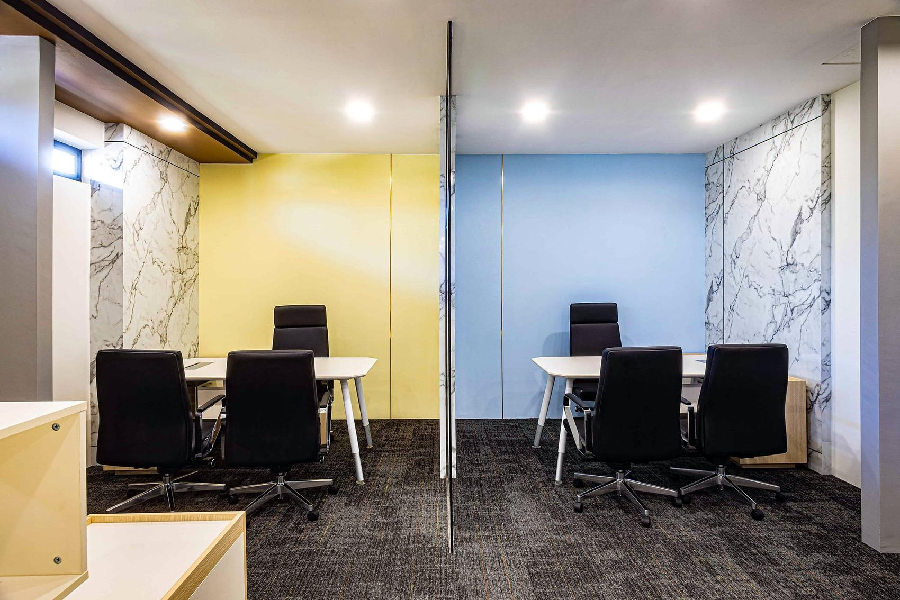
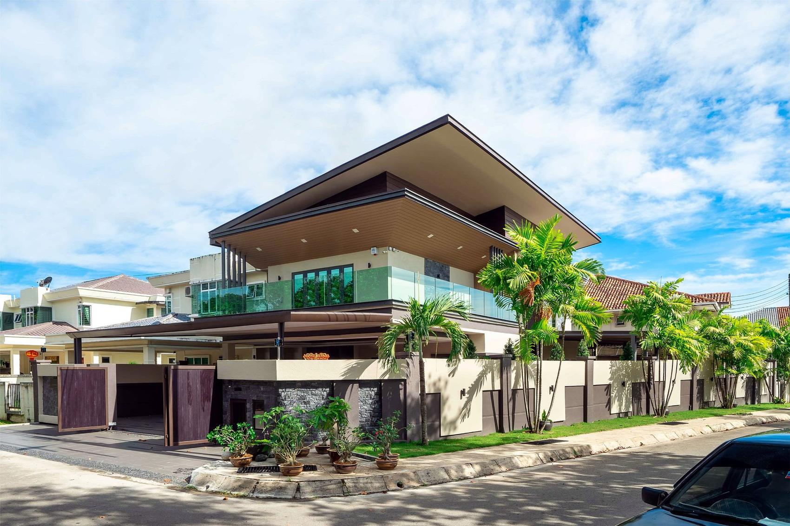
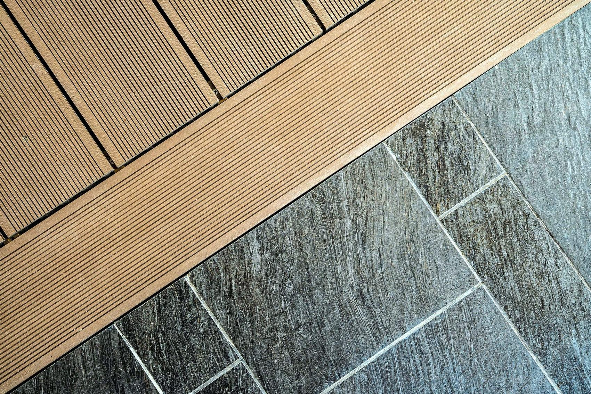
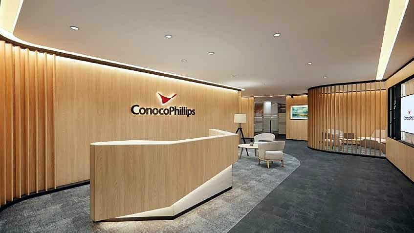
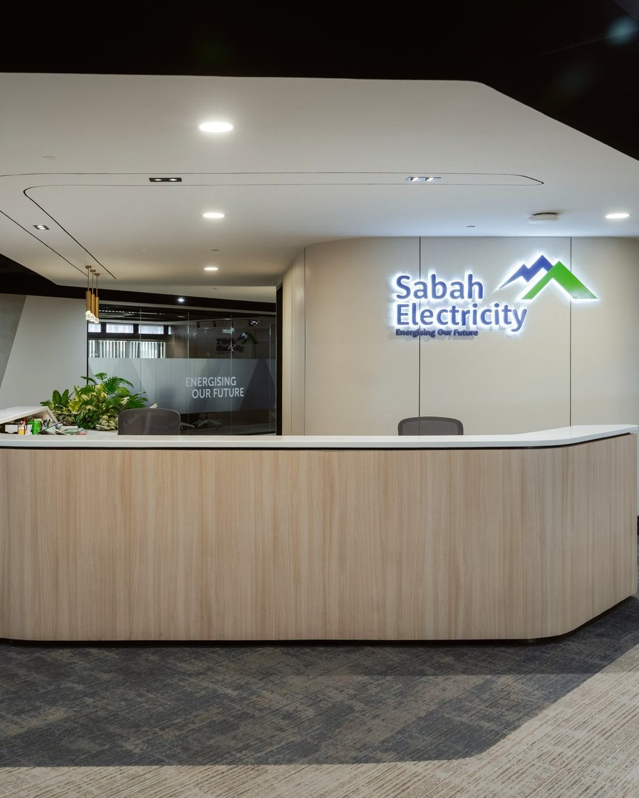
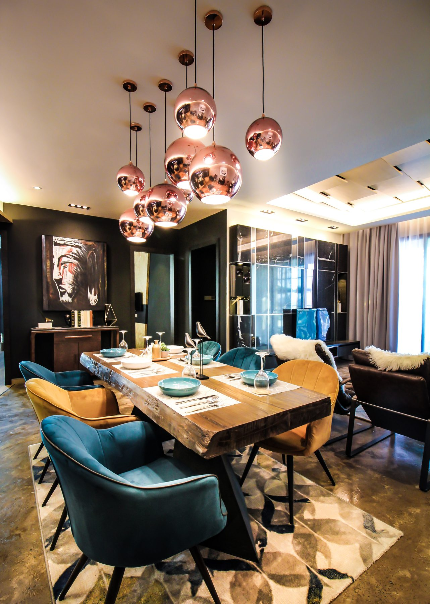
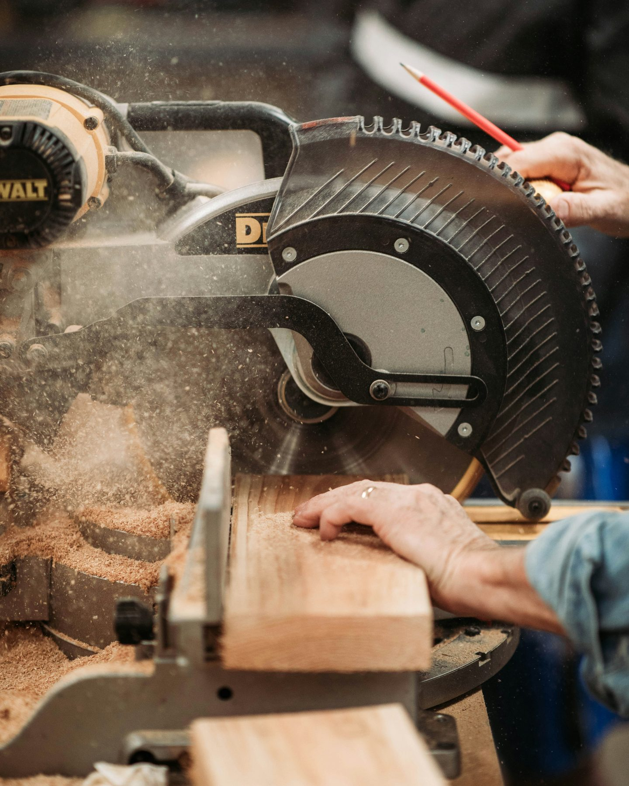
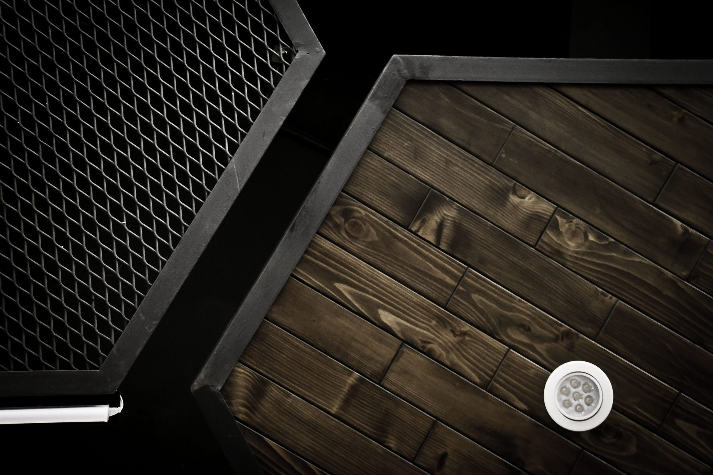
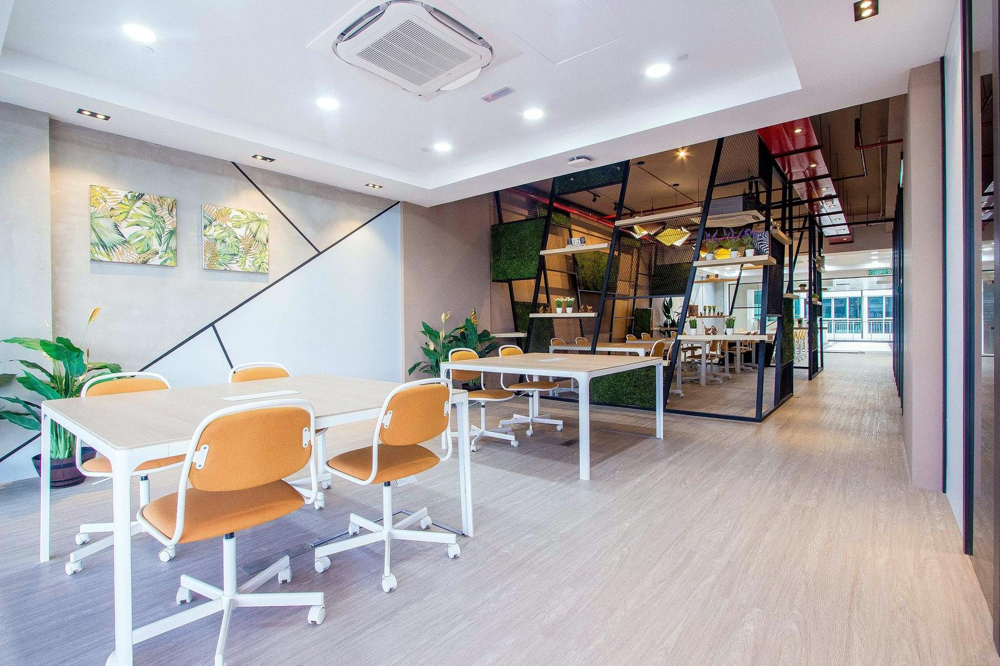

Youthe client
- Architect
- C&S engineer
- M&E engineer
- Interior designer
- Quantity surveyor
- Main contractor
- Sub-contractors
- Specialists
- Electricians
- Suppliers
- Local authority
- Your business
- Your family
From concept to completion, JWA brings together the expertise, systems and resources to deliver projects with quality, speed and precision.
One integrated ecosystem. Multiple specialist capabilities. A shared commitment to excellence.

We solve all your project needs under one roof.
Major projects involve multiple consultants, contractors, suppliers and stakeholders.
Our multidisciplinary team brings architecture, construction, interior design, quantity surveying, procurement and project management together from day one, so you focus on your priorities while we manage delivery.
We keep finding smarter, faster and more efficient ways to deliver.
Proactive planning, digital project management, coordinated procurement and better workflows cut delays and bring handover forward.
Swipe sideways to see the full timeline.
We question conventional methods, remove unnecessary steps and keep looking for smarter solutions, so projects finish faster and with greater precision, without compromising quality or safety.

Better information. Better decisions.
Digital tools give clear visibility of programme, cost, procurement and site progress, so we step in earlier and decide faster.

Every day counts.
Proactive planning, early procurement and coordinated workstreams cut avoidable delays. Speed comes from preparation, not shortcuts.

Faster never means cutting corners.
Clear responsibilities and consistent quality controls keep workmanship, safety and professional standards where they belong.

Always learning. Always improving.
Every project refines our systems and strengthens our people. We measure progress by how much better we get at delivering.
Our multidisciplinary team combines technical knowledge, practical experience and hands-on project leadership.
From design development to site execution, every discipline contributes towards achieving the project’s quality, cost and programme objectives.

We believe trust is earned through consistent performance, transparent communication and responsible project management.
Our professional systems, experienced teams and recognised industry credentials provide clients with confidence throughout the project lifecycle.
 CIDB Grade G7
CIDB Grade G7 ISO 9001:2015
ISO 9001:2015 LAM registered
LAM registeredOur CIDB Grade G7 registration, ISO 9001:2015 quality management and professional memberships are listed in full on our About page.
See our certificationsEngage us for one service or for all eight. Either way, one team stays accountable. Choose a service on the wheel to see what it covers.
1 of 8
One Team. One Responsibility.
Integrated design and construction services that align creativity, technical requirements, cost and programme under one coordinated delivery approach.
From concept development to final handover, we simplify project execution and improve efficiency.
2 of 8
Built with Precision. Delivered with Confidence.
Professional main contracting services for corporate, institutional, commercial and industrial projects.
Our construction teams focus on quality workmanship, effective site management, programme discipline and responsible execution.
3 of 8
Smarter Systems. Faster Progress.
We combine experienced project leadership with innovative management tools to improve planning, monitoring and coordination.
Through structured reporting, proactive problem-solving and disciplined execution, we drive better control over time, cost, quality and resources.

4 of 8
Purposeful Design. Lasting Value.
Professional architectural solutions that balance creativity, functionality, buildability and commercial value.
Our design approach considers the complete project lifecycle, ensuring concepts can be translated efficiently into quality-built environments.

5 of 8
Thoughtful Spaces. Exceptional Detail.
Integrated interior solutions that combine functionality, aesthetics and technical precision.
From corporate workplaces to hospitality and commercial environments, we create spaces that perform as well as they look.

6 of 8
Craftsmanship Meets Precision.
Specialist fit-out and custom carpentry services supported by dedicated workshop capabilities.
Our integrated approach provides greater control over detailing, production coordination and finishing quality.

7 of 8
Better Choices. Seamless Finishes.
Through our specialist materials and décor business, we provide access to curated finishes, furnishings and interior solutions.
Closer coordination between design, material selection and procurement supports efficient project execution.

8 of 8
Performance Beyond Completion.
Our commitment extends beyond construction handover.
Through planned maintenance and facility management services, we help clients protect asset value, maintain operational performance and support long-term building quality.
Our people, professional systems, industry registrations and financial resources support our ability to undertake increasingly larger and complex projects for corporate, institutional and public-sector clients.
We continue to invest in stronger project management, operational efficiency and organisational capacity to meet increasingly complex demands.
Whether you require a complete design-and-build solution or specialist construction services, JWA brings together the right expertise to deliver your project efficiently and professionally.